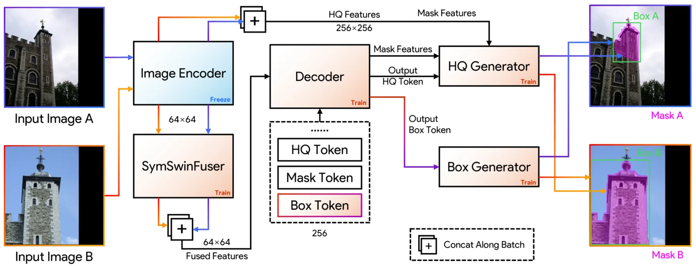
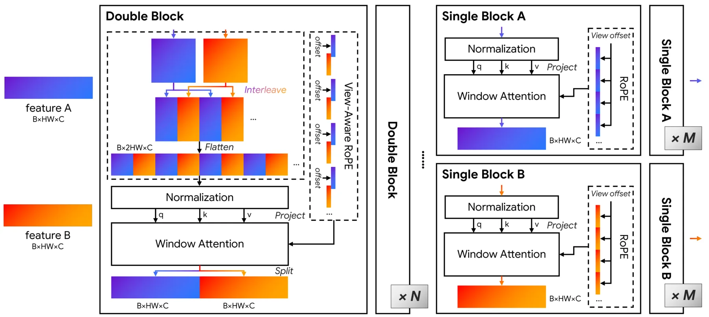

SAMatcher：结合 Segment Anything 的共可见性建模鲁棒特征匹配SAMatcher: Co-Visibility Modeling with Segment Anything for Robust Feature Matching
特征匹配是 SfM、视觉定位和视觉 SLAM 前端核心，显式共可见建模具有实用价值；需等待代码或项目页材料确认工程可复现性。
一句话工作总结
用 SAM 预测共可见区域作为先验，增强大视角变化下的图像特征匹配。
摘要
SAMatcher 将特征匹配建模为共可见区域预测问题，先基于 SAM 预测跨视图共可见 mask 和 bounding box，再将其作为结构化先验进行对应估计。方法引入对称 cross-view interaction 做双向特征交换和语义对齐，并通过 mask learning、box regression 和 mask-box consistency 统一监督，在大视角和尺度变化下提升匹配鲁棒性。
Reliable correspondence estimation is a fundamental problem in image processing, underpinning applications such as Structure from Motion, visual localization, and image registration. Existing learning-based methods have significantly improved local feature representations, yet most still operate at the pixel or patch level and lack explicit modeling of regions that are jointly visible across views. We propose SAMatcher, a feature matching framework that formulates correspondence estimation through co-visibility modeling. Instead of directly matching local features, SAMatcher first predicts co-visible region masks and bounding boxes as structured priors for correspondence estimation. Built upon the Segment Anything Model (SAM), it introduces a symmetric cross-view interaction mechanism that enables bidirectional feature exchange and cross-view semantic alignment. We further develop a unified supervision scheme that jointly optimizes mask prediction and box localization through mask learning, box regression, and mask-box consistency constraints. Extensive experiments on challenging benchmarks demonstrate substantial improvements over existing matching pipelines, particularly under large viewpoint and scale variations. Our results show that foundation models originally designed for monocular segmentation can be effectively extended to multi-view correspondence reasoning through explicit co-visibility modeling, offering a new perspective on structured representation learning for image matching. Code and project page: https://xupan.top/Projects/samatcher
中文解读摘录
图表/页面预览

{kind=link}

{kind=link}
